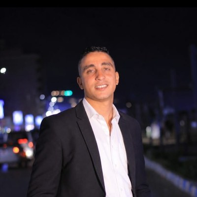

I build and maintain reliable IT systems, solve complex problems, and keep things running smoothly — then quietly automate whatever shouldn't have been manual in the first place.

I'm an IT Systems Engineer with 5+ years managing enterprise infrastructure — Windows Server, Active Directory, VMware ESXi, and firewall/VPN configuration. What sets the work apart is a habit of noticing operational friction and quietly automating it: four internal systems now run what used to be manual, per-branch routines.
Every new hire needed a physical enrollment visit to their branch's fingerprint device. I built a Flask-based platform that manages every ZKTeco device from a single dashboard — eliminating on-site enrollment visits company-wide.
IT requests arrived as scattered emails with no history tied to the asset or user. I built a tracker with automatic email-to-ticket classification and Snipe-IT integration — centralizing every request and asset record.
Each recorder's clock had to be corrected by hand, one device at a time. I built a tool using the Hikvision ISAPI to sync every device's clock in a single action — replacing per-device manual configuration.
Deciding which machines needed a new drive or more memory relied on guesswork. I wrote a PowerShell script that scans every domain-joined machine for disk health and RAM specs — giving the team data instead of guesswork.